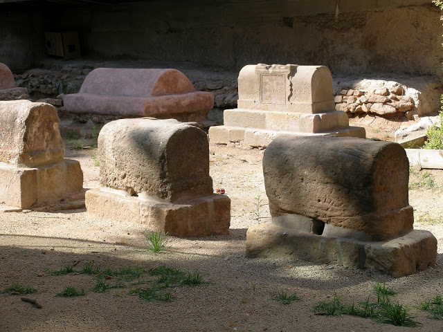

Correct! You have passed through the entrance.
🏛️ City Archives:
The Roman Sepulchral Way of Barcino is a unique site. Tombs were located outside the city, as Roman law prohibited burying the dead within the city walls. The ones you see today were hidden underground for more than 1,500 years.
"Before you, you can see the eternal dwellings of those who once walked the streets of my beloved Barcino. Our tombs are on the paths so that travelers can see us and remember us.
My family occupies one of these tombs and our symbol is still visible on one side. The luck always accompanies us, so I hope it does you too. Are you able to see us?
Look for the tomb mentioning the Minicius. Which figure of LUCK is engraved on its side?"